1/1
←
→
Product Arena
Cursor para PMs
Arthur Castro · Lucas Mattos
Seus Instrutores
Lucas Mattos
GPM GenAI @Disrupt iFood
- ☕️ Mineiro uai
- 🤖 Apaixonado por gambiarra desde 2012
- ⛵️ Mergulhador com uma quase travessia do Atlântico em um barco à vela
Lugares onde ajudei a construir produtos:
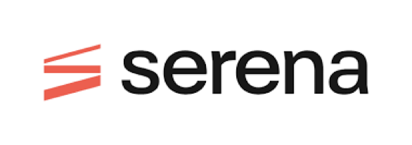
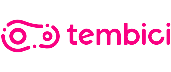
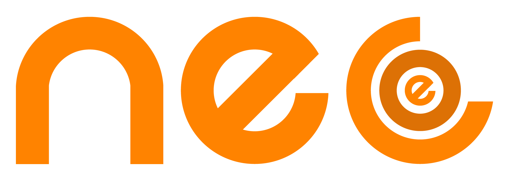
Seus Instrutores
Arthur Castro
CEO & Founder @ Product Arena
- 🍼 Full time Ivy's Dad
- 🪂 Paraquedista com uma tentativa de atropelar o avião
- 🗣️ Comentador de previsões apocalípticas no Podcast do Papo na Arena
Lugares onde ajudei a construir produtos:
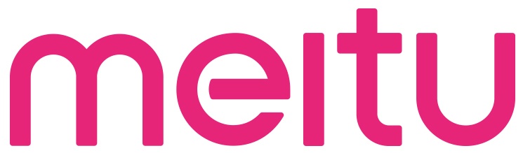
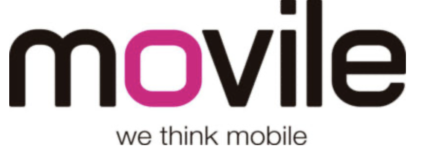
Filosofia do curso
Cursor como copiloto
Não como piloto automático — você decide, a IA amplia
01
Mão na massa
Pra quem gosta de construir e entender o que está sendo feito em cada passo.
02
Ampliar decisões
Use a IA para enxergar mais opções, não para decidir no seu lugar.
O que vamos fazer
O que vamos aprender
⚙️
Configurar seu Workspace — Setup, Rules, Commands.
🚀
Otimizar o uso do Cursor — Ask, Plan, Agent e contexto.
📋
Adaptar ao ciclo de produto — Notas, PRD, dados, Jira, apresentações.
🎯
Construir seu protótipo — Arena Voting System, do planejamento à construção.
Diferenças
A diferença do Cursor
Ir além da conversa: é ter seu par técnico ao lado, executando de verdade no seu ambiente
ChatGPT
Só conversa. Respostas genéricas, sem seu código.
Apps visuais. Gera UI sem tocar no código.
Automação. Conecta serviços e fluxos.
Seu par técnico de fato. Não só conversa — executa no seu workspace.
Antes de começar
Tudo pronto?
Checklist para o curso
✔
Cursor instalado + Plano Pro
✔
Conta GitHub ativa
✔
Obsidian (opcional)
✔
Conexão no LinkedIn (Lucas & Arthur)
Mapa do bloco 1
Agenda do dia
A ideia é ir do "olá, Cursor" até usar a IA como par técnico no seu fluxo de produto.
☕ Manhã
Setup, modos do Cursor (Ask, Plan, Agent) e primeiros exercícios.
10:00 – 12:30
🍽️ Pausa almoço
Intervalo para descanso e refeição.
12:30 – 14:00
🧠 Meio do dia
Rules, Commands, MCP Jira e ciclo de produto (notas, PRD, dados, apresentações).
14:00 – 15:30
☕ Café da tarde
Intervalo para café e retomada.
15:30 – 15:45
🚀 Tarde
Construindo seu protótipo — Arena Voting System (PRD, design, histórias, code-review, editor visual).
15:45 – 18:45
Demo
Seu dia pode começar com um comando
Case “Start my day” — o Cursor na sua rotina

Você comanda. Ela executa.
Workspace
Setup — Criar seu workspace
1. Crie uma pasta dedicada
Separe uma pasta só para o curso no seu computador. Ela será o “palco” de tudo que vamos construir.
2. Abra a pasta no Cursor
No Cursor, vá em File → Open Folder e selecione essa pasta. É assim que o Cursor “enxerga” seus arquivos.
3. Use sempre o mesmo workspace
A partir de agora, todos os exercícios e projetos vão viver aqui, no mesmo workspace.

💡
Pro tip — Ativar File-Deletion Protection nas configurações do Cursor.
Abrindo parênteses
Cursor e acesso à máquina
Como um IDE: o Cursor navega nos arquivos do seu computador — assim como o terminal. Ele “vê” o que você abre.
Exercício · Ask
Modo Ask
⏱ 10 minutos
Pergunte: “O que você é capaz de fazer?”

Abrindo parênteses
O que é o GitHub?
Controle de versão e colaboração
Plataforma onde repositórios = projetos versionados na nuvem.
git cloneBaixar uma cópia do projeto no seu PC.
📖
Dicionário — Clone = copiar do GitHub · repo = repositório = diretório/pasta
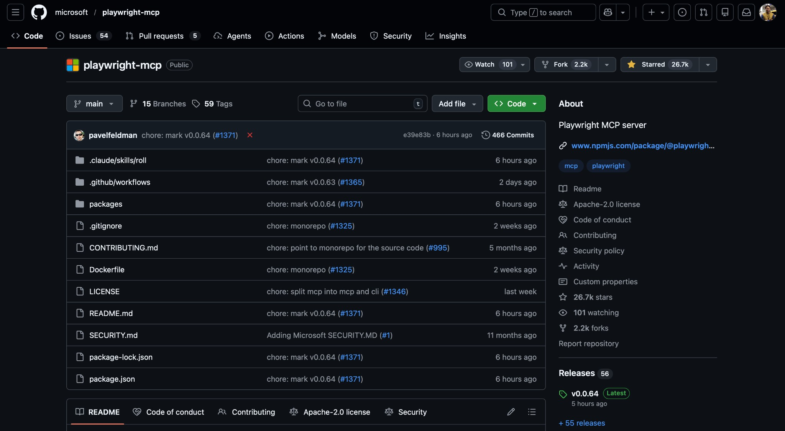
Exercício · Plan
Plan — Mapear dependências
⏱ 10 minutos
Pergunte no Cursor: “Eu já tenho conta no GitHub. O que preciso para clonar um repositório aqui?” — deixe o plano te guiar.
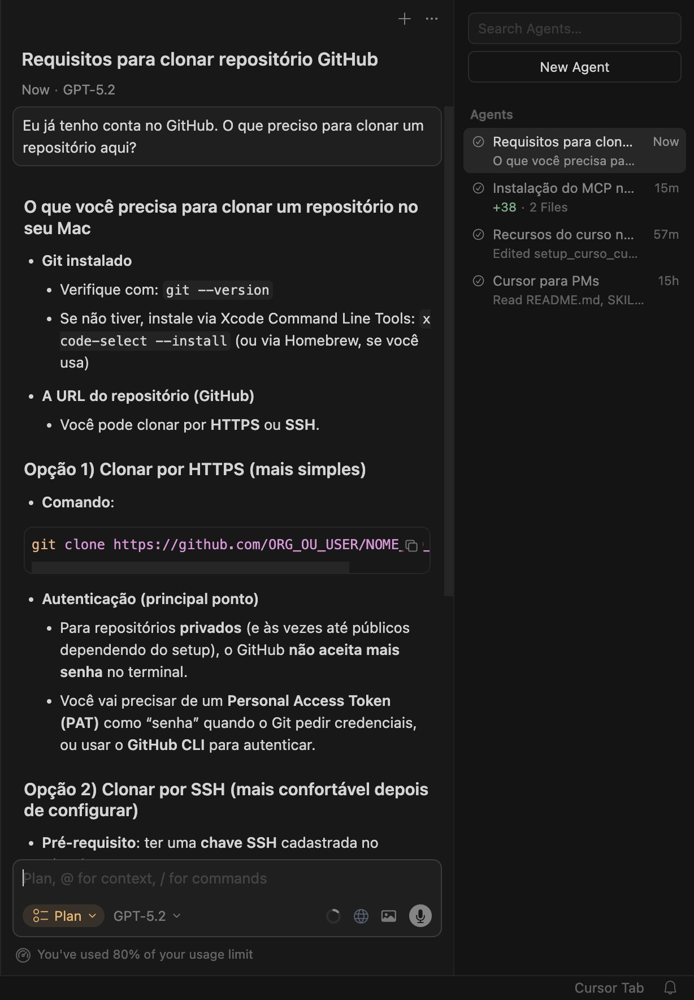
Abrindo parênteses
GitHub — onde configurar SSH
1. Entrar no GitHub
Acesse github.com e faça login na sua conta.
2. Abrir o menu do perfil
No canto superior direito, clique no avatar e depois em Settings.
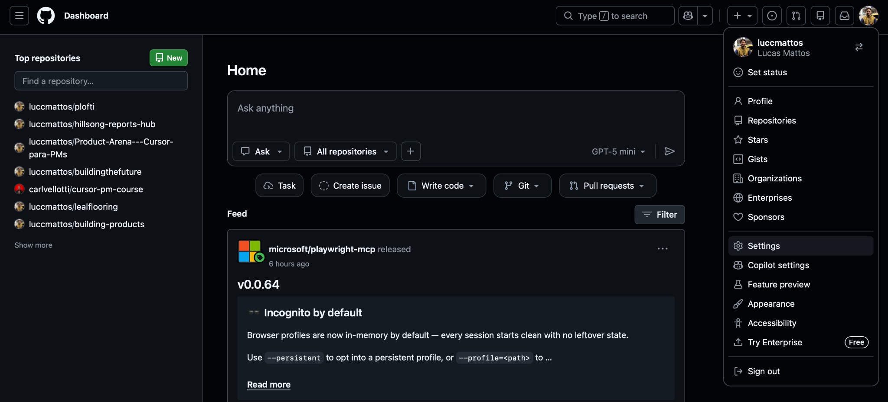
Abrindo parênteses
GitHub — SSH and GPG keys
3. Seção de chaves
No menu lateral esquerdo, vá em SSH and GPG keys. É aqui que vamos adicionar a chave gerada pelo Cursor.

Abrindo parênteses
GitHub — Adicionar chave SSH
4. Criar nova chave
Clique em New SSH key, escolha um título (ex.:
cursor) e cole a chave pública que o Cursor gerou.5. Confirmar
Clique em Add SSH key para salvar. A partir daí, o GitHub reconhece seu computador quando você usar
git clone.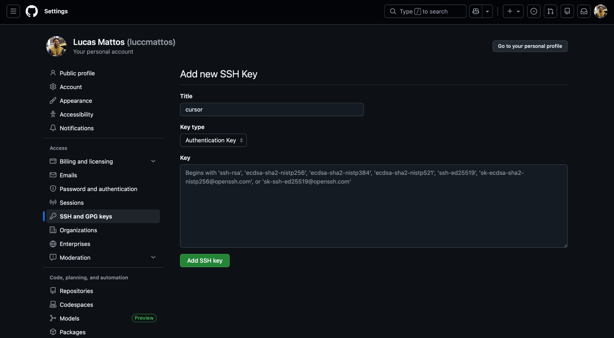
Abrindo parênteses
Allowlist — O que o agent pode executar
Segurança e Controle
Você define exatamente quais comandos o Cursor pode rodar. Nada acontece sem sua permissão explícita.
Configuração Preventiva
Antes de clonar repositórios desconhecidos, revise o que está permitido na sua allowlist.
💡
Pro tip — Crie um agent em modo Ask, fixe-o (Pin) e pergunte: “O que o comando
cp faz?” — E evite liberar rm e git commit sem revisão.
Exercício · Plan
Plan — Clonando nosso primeiro repo
⏱ 20 minutos
O prompt
“Monte um plano para eu clonar
https://github.com/Product-Arena/cursor-para-pms.git”
Depois, clique no botão Build gerado pelo plano.
https://github.com/Product-Arena/cursor-para-pms.git”
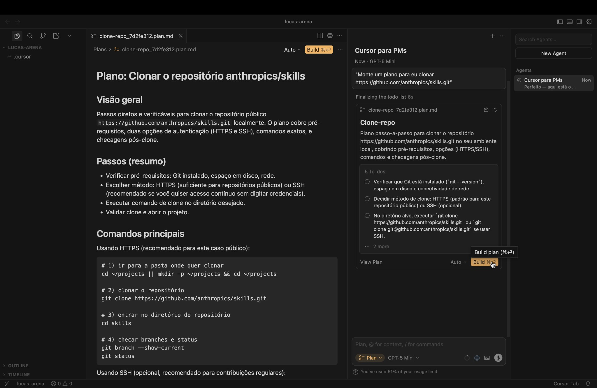
Exercício · Ask
Ask com contexto
⏱ 5 minutos
Arraste a pasta que você acabou de clonar para o chat. Depois pergunte: “O que essa pasta faz?” — o Cursor lê o que você coloca no contexto.

Modo Agent
Modo Agent
A IA propõe e aplica
Alterações nos seus arquivos; você revisa e aprova cada mudança.
Mão na massa
É o modo que mais esperamos do Cursor: execução no seu ambiente.

Abrindo parênteses
Modelos e contexto
Escolha de modelos
Claude, GPT e outros nas configurações do Cursor — você define qual modelo responde em cada modo.
Janela de contexto
Quantos tokens o modelo “enxerga” de uma vez. Arquivos, pastas e histórico no contexto expandem ou limitam o que a IA considera.
💡
Pro tip — Composer-1 para MCPs e tool calls; Gemini 3 Pro para frontend.
Exercício · Agent
Agent — Instalar skills
⏱ 15 minutos
Envie: “Quero que você instale esses skills no meu workspace.” Aprove as etapas que o Agent sugerir.
Abrindo parênteses
O que são Skills?
Extensões de comportamento
Tarefas, fluxos e templates. Instalados via marketplaces (skills.sh, skillsmp.com).
Onde ver o que está instalado
Cursor → Settings para conferir os skills ativos.
💡
Pro tip — Encontre skills gratuitos no diretório skills.sh.

Product Arena
Presente da Arena
O stack dos instrutores
Leve para casa a mesma configuração de Rules, Commands e estrutura de arquivos que Lucas e Arthur usam no dia a dia.
Workspace pronto para copiar
Use este repo como base para novos projetos: adapte, duplique e crie seu próprio sistema em cima dele.
💡
Pro tip — Trate esse stack como seu “ponto de partida padrão” — sempre que for criar algo novo, comece daqui em vez de reconfigurar tudo do zero.
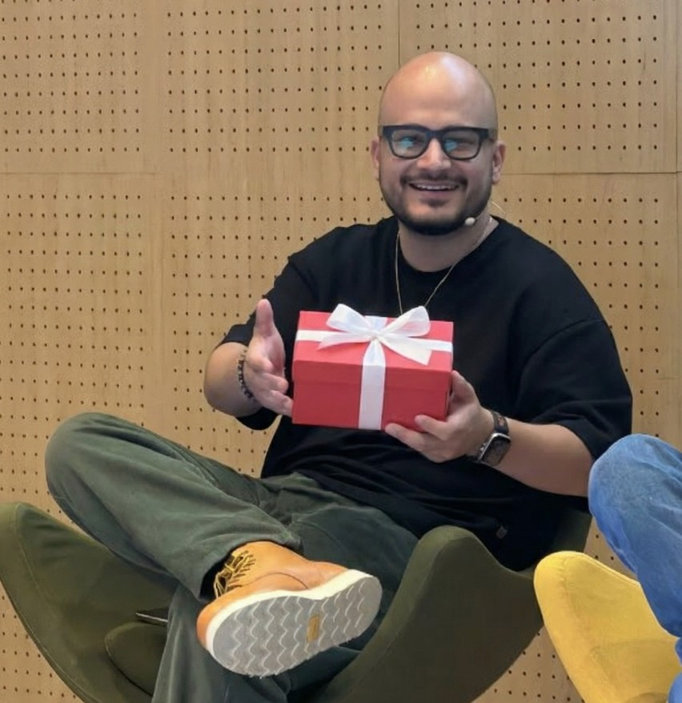
Product Arena
Commands —
Macros em linguagem natural
Macros em linguagem natural
Por que importa:
Um comando como
Um comando como
/start-a-business dispara um fluxo completo e padronizado sem você precisar repetir o prompt inteiro a cada vez.
.cursor/commands/start-a-business.md
--- description: "Start a new business venture: create project structure..." --- **When user runs `/start-a-business`:** ## Step 1: Capture Initial Information Ask the user these questions in sequence: 1. **"What's the name of your business/idea?"** - Capture: business name - Use this to create the project folder name (kebab-case) 2. **"Give me a brief description (1-2 sentences)"** - Capture: brief description - This will be used in initial Product Strategy ## Step 2: Create Project Structure Automatically Create the following structure: projects/[business-name]/ ├── documents/ │ └── README.md └── README.md
Sugestão de conteúdo
Cursor em ação
Cursor Replaces Your Entire Business Stack (Full Demo)
Greg Isenberg — visão de quem usa Cursor no dia a dia
Product Arena
Rules —
Seu manual de estilo
Seu manual de estilo
Por que importa:
O Cursor segue convenções do seu projeto (PRD, código, design) automaticamente, sem você precisar reexplicar o contexto a cada nova interação.
O Cursor segue convenções do seu projeto (PRD, código, design) automaticamente, sem você precisar reexplicar o contexto a cada nova interação.
Diferenças de apply:
alwaysApply: true — rule sempre ativa.
alwaysApply: false — ativa só quando os arquivos correspondem ao padrão (ex.: prd-*.md). Evite excesso: ocupa contexto.
alwaysApply: true — rule sempre ativa.
alwaysApply: false — ativa só quando os arquivos correspondem ao padrão (ex.: prd-*.md). Evite excesso: ocupa contexto.
.cursor/rules/prd-template.mdc
--- description: "PRD Template and Guidelines" globs: "documents/prd-*.md" alwaysApply: false --- # PRD Template Usage ## When to Use - Transforming docs into PRD format - Creating new product requirements ## Template Structure 1. **Background** (H2) Context regarding the problem... 2. **Objectives** (H2) Key measurable goals... 3. **Features** (H2) Detailed functional requirements...
Abrindo parênteses
Manter o espaço limpo e organizado
Riscos do Cursor criar muitas coisas — use a regra como guardião.
💡
Pro tip — A rule
.cursor/rules/general-guidelines.mdc evita poluição do workspace. Trechos abaixo..cursor/rules/general-guidelines.mdc (Cursor guidelines)
## Cursor guidelines Keep the workspace organized and avoid unnecessary files. ### Prefer the chat Respond in the chat (do not create files) for: - Checklists and validation lists - Step-by-step setup instructions (APIs, OAuth, etc.) - Short summaries and reference notes - One-off instructions that are not official project documentation ### Create files only when - The user explicitly asks to save or create a file - It is a project artifact (README, PRD, design system, etc.) per project structure - The content is too large for the chat or needs to be versioned/reused
Retorno do almoço
Recap e perguntas
💬
Ask & Contexto: Conversar com arquivos e pastas
🧠
Plan Mode: Raciocínio antes da execução (Git)
⚡
Agent Mode: A IA agindo no seu ambiente
🛡️
Segurança: Allowlist e controle do que roda
Espaço para dúvidas antes de seguirmos para o ciclo de produto
Meio do dia — 14:00–15:30
Bloco 2 — Cursor no ciclo de produto
🧠 Meio do dia
14:00 – 15:30
Rules, Commands, MCP Jira e ciclo de produto (notas, PRD, dados, apresentações).
Conteúdo
- Notas de reunião (case Arthur — mentorias)
- Entendimento do problema / PRD
- Analisando dados (Forms → Sheets → Cursor + MCP → dashboard)
- User Stories no Jira com MCP
- Criando apresentações (HTML, fontes, gráficos)
Exercícios
- Modo Agent — instalar skills ou arquivos do curso
- Plan — arquivos do curso na raiz do workspace
- MCP Jira — instalar e criar tasks
Notas de reunião e organização de agenda
Como o Arthur organiza as notas (mentorias)
Notas que viram ação
Cada sessão de mentoria gera um conjunto de notas que já nasce organizado para virar próximos passos e follow-ups.
Uma estrutura por pessoa
Templates fixos por mentorado: mesma hierarquia de pastas, seções e tags, o que facilita comparar sessões ao longo do tempo.
Cursor como hub
As notas convivem com PRDs, tasks e dashboards — tudo acessível via Cursor, sem depender de múltiplas ferramentas soltas.
Do insight ao documento
Usando o Cursor para criar um PRD
Do bloco de notas ao PRD
Partindo das notas (como as do Arthur), o Cursor ajuda a estruturar Background, Problema, Objetivos, Escopo e Métricas em um PRD coerente.
Templates + Rules
Com um template de PRD e uma Rule específica, você garante que todo novo documento siga o mesmo formato — mesmo com vários autores.
🎬
Spoiler — daqui a pouco vamos usar exatamente esse fluxo para criar o PRD do nosso Arena Voting System.
MCP também conecta:
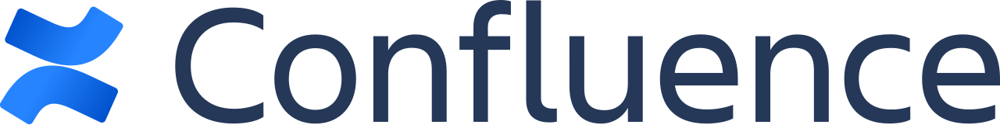
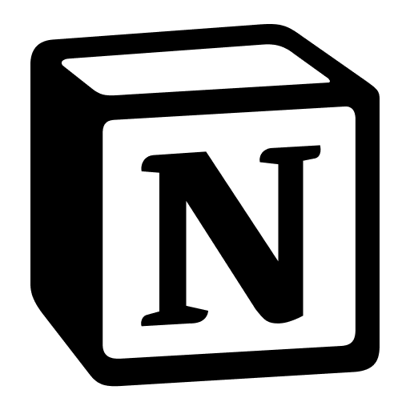
Analisando dados
Analisando dados like pro
1. Para conectar aos dados
MCPs e arquivos locais: traga dados de onde já estão para o contexto do Cursor.
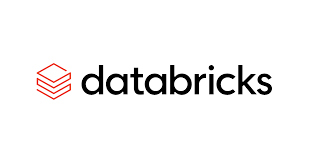
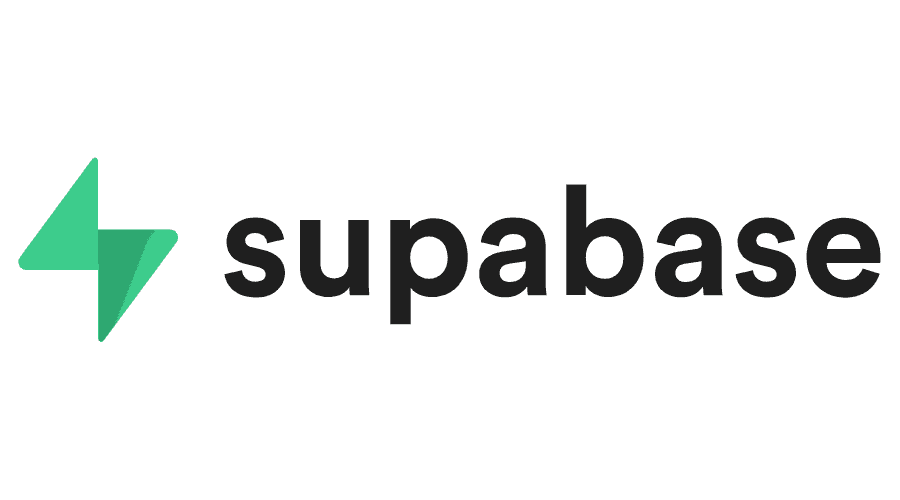
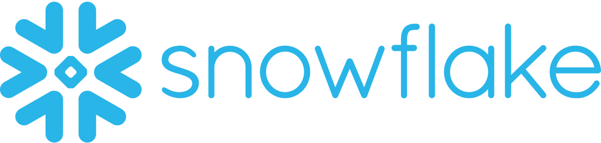
📁 CSV local2. Para gerar as análises
Skills especialistas em SQL e Pandas no Cursor: otimização de queries, transformações e agregações. Ex.: sql-optimization-patterns, pandas-pro (ver referências).
3. Criar as visualizações
Dashboards, gráficos e páginas HTML a partir do plano do Cursor — com os dados e análises já no contexto.
Case
expectations-analysis — o que fizemos
Origem dos dados
Formulário pré-curso (Google Forms) → respostas no Google Sheets. Dados exportados ou lidos via MCP Google para o contexto do Cursor.
Processo
Cursor em modo Plan + prompt em Markdown: plano de pré-processamento (Python), agregações, temas de texto e JSON. Script gera
processed.json e text-themes.json a partir do CSV.Entrega
Dashboard HTML responsivo (ECharts): filtros por uso de IA, APIs e camiseta; gráficos de distribuição; temas das expectativas e recomendações de conteúdo para o curso.
📖
Em seguida — o prompt em Markdown que usamos. O dashboard você pode mostrar em outra tela.
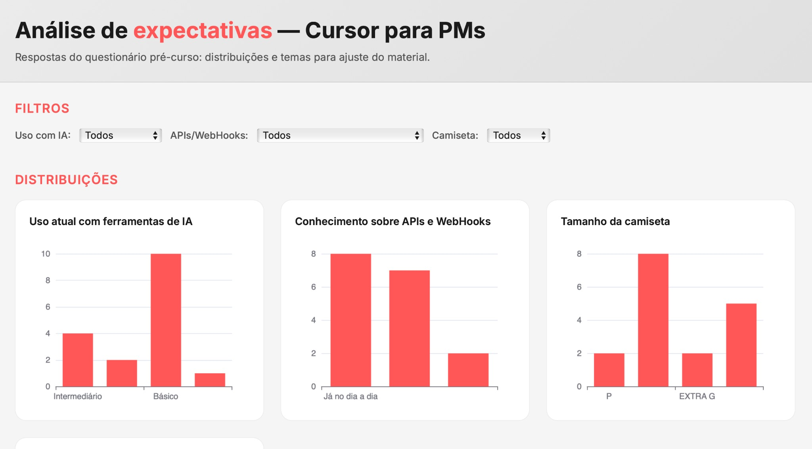
Product Arena
O que é MCP?
- Criado pela Anthropic para comunicação entre agentes e ferramentas.
- Outros protocolos surgindo (ex.: A2A — agent to agent).
Pense no MCP como a “ponte” entre o Cursor e o mundo externo — dados, APIs e ferramentas especializadas.
🌐
Pro tip (comunidade) — Explore servidores MCP construídos pela comunidade em mcpservers.org e mcpdirectory.ai. Muitas vezes versões da comunidade são mais completas do que os servidores oficiais.

Exercício · MCP
Instalar MCP Jira
⏱ 15 minutos
Atlassian Rovo MCP — use o modo Plan para seguir o passo a passo.
Guia oficial (Atlassian Rovo MCP Server) · productarena.atlassian.net
📎
Referência oficial — Atlassian Rovo MCP Server (OAuth 2.1):
guia de setup.
Use API token só se o seu servidor MCP pedir.
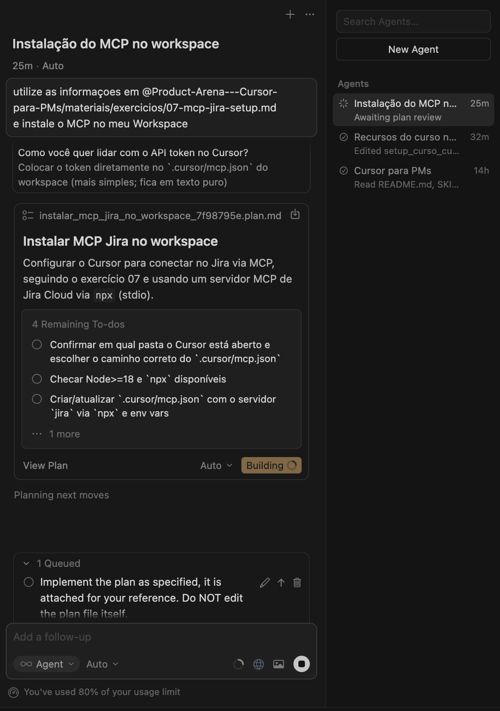
Abrindo parênteses
Atlassian — onde achar o API token
1. Configurações da conta
No Jira, clique no seu avatar (canto superior direito) e selecione Configurações da conta para abrir o painel da Atlassian.
🔒
Dica — Token é segredo. Não cole em slides, docs ou chat.
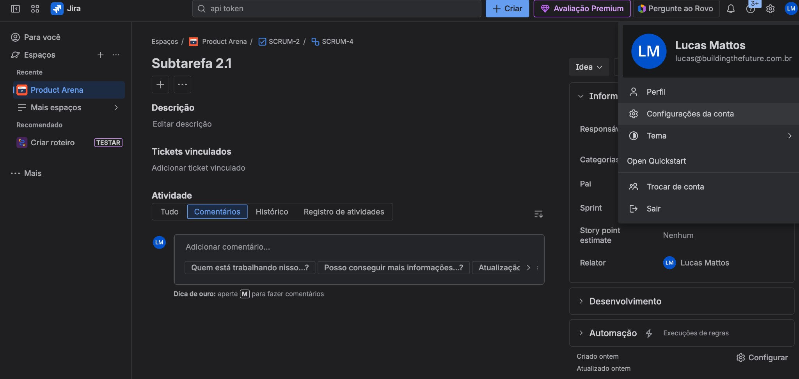
Abrindo parênteses
Atlassian — Segurança
2. Ir em Segurança
No topo do painel, clique em Segurança.
3. Tokens de API
Role até Tokens de API e abra a área de criação/gerenciamento.
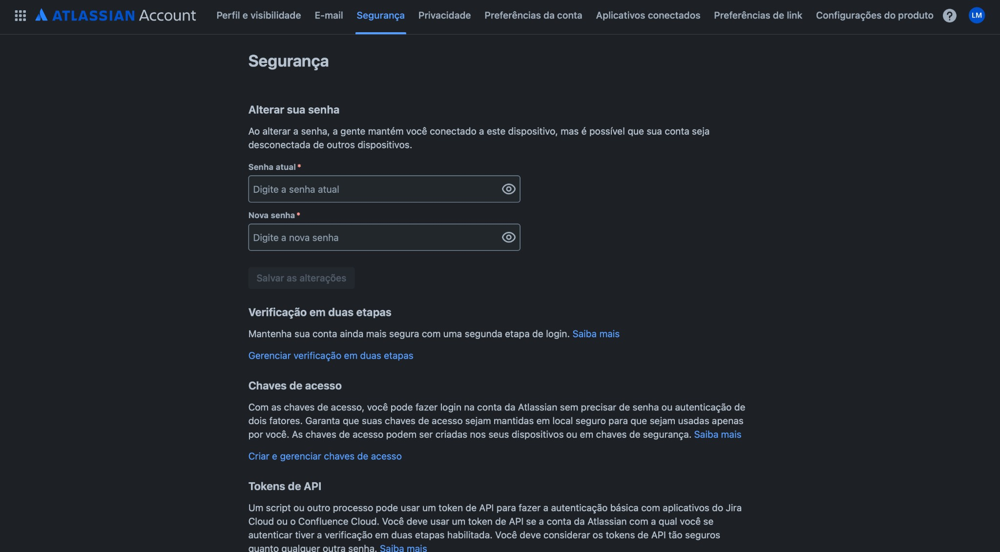
Abrindo parênteses
Atlassian — criar token
4. Criar um token
Clique em Criar um token de API (ou equivalente) e dê um nome (ex.:
cursor).5. Copiar e guardar
Copie o token e salve num local seguro. Você geralmente não consegue ver de novo depois.
✅
Regra — Se você suspeitar de vazamento, revogue e crie outro token.
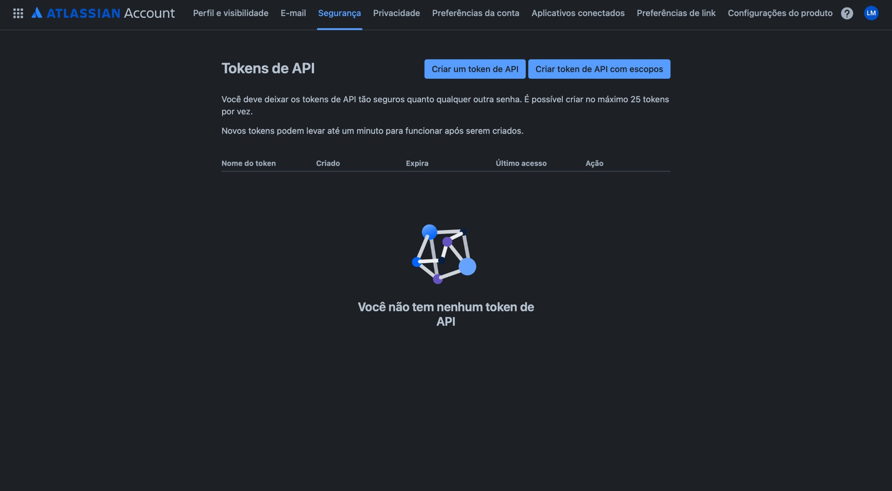
Abrindo parênteses
Atlassian — salve o token
7. Copiar
Use o botão Copiar e salve imediatamente no seu cofre/gerenciador de senhas.
8. Nunca compartilhe
Não cole em docs, slides, issues ou chat. Configure só localmente no Cursor (MCP env).
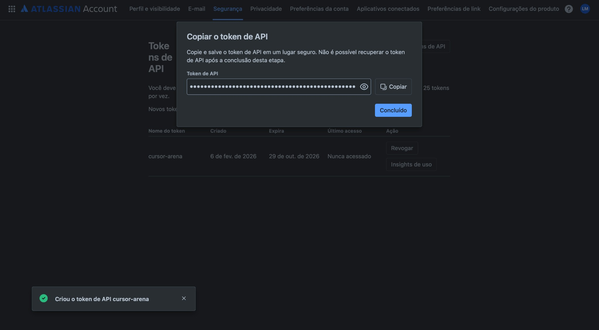
Exercício · MCP
Jira — Criar uma User Story
⏱ 15 minutos
Objetivo: usar o MCP do Jira para criar uma issue (Story/Task) com título, descrição e critérios de aceite — direto do Cursor.
1. Escolha um alvo
Defina projeto (ex.:
AVS) e tipo (Story ou Task).2. Peça para criar via MCP
No Cursor, use Agent e deixe ele chamar o MCP do Jira para criar a issue.
3. Verifique no Jira
Abra o link retornado e confirme campos (labels, prioridade, assignee, sprint).
🔒
Dica — Não inclua tokens, senhas ou dados sensíveis no corpo da issue.
Prompt (exemplo)
# Jira (MCP) — Criar User Story ## Contexto - Já configurei o MCP do Jira no Cursor - Meu workspace Jira: https://productarena.atlassian.net ## Tarefa Crie uma issue no Jira com: - projectKey: AVS - issueType: Story (ou Task) - summary: "Como usuário, quero votar em ideias para priorizar melhorias" - description: inclua contexto, fluxo e critérios de aceite - labels: ["cursor", "mcp", "aula"] - priority: Medium Depois, me devolva: 1) O link da issue criada 2) O ID/chave (ex.: AVS-123) 3) Um resumo do que foi criado
Criação de apresentações
Apresentações no dia a dia — feitas com Cursor
Este material foi feito com amor ❤️ e Cursor 🤖 — slides, gráficos em HTML e código guiados pela IA.
1. Criar as estruturas base
Design system (cores, tipografia, tipos de slide), layout e componentes. O
design-system.md define o padrão; o Cursor mantém consistência.2. Conteúdo
Narrativa, títulos, bullets e exemplos. Rules e contexto no workspace para o Cursor seguir o tom e a estrutura do curso.
3. Usar skills
Skills de apresentação (pptx, tema, Marp) para exportar, aplicar temas e iterar. Código HTML dos slides versionado e evoluído com a IA.
design-system.md (trecho)
# Design System - Apresentação Cursor para PMs ## Visão Geral Estilo limpo, "Notion-like". Baseado na Product Arena. ## Cores Accent: #FF5757 Texto: #1a1a1a / #555555 BG Primary: #f5f5f5 ## Tipografia Principal: Inter Slide Title: 64px, Weight 700 Body: 16px-18px ## Tipos de slide - slide — conteúdo (bg primary) - slide-type-parenteses — cinza - slide-type-exercicio — escuro
Retomando
Recap — rules, commands, MCPs
📋
Rules: Manual de estilo do projeto — o Cursor segue convenções sem você reexplicar.
⌨️
Commands: Macros em linguagem natural (ex.: /create-prd) para fluxos repetíveis.
🔌
MCPs: Jira, Google, Confluence — conectar dados e tarefas ao contexto do Cursor.
🎯
Arena Voting System: Tudo isso junto no próximo bloco prático.
Tudo que vamos usar no Arena Voting System
Pausa
☕ Pausa para o cafezinho
10–20 minutos
Tarde — 15:45–18:45
Bloco 3 — Construindo seu protótipo
🚀 Tarde
15:45 – 18:45
Construindo seu protótipo — Arena Voting System (PRD, design, histórias, code-review, editor visual).
Conteúdo
- Repo pessoal (GitHub público) para exercícios
- /start-a-business — Arena Voting System
- PRD com /create-prd — doc de requisitos
- Design System — extrair cores, tipografia e logo de productarena.io
- Protótipo funcional — Plan + localhost
- Quebrar histórias — modo Plan
- Code-review + Editor visual
- Subir projeto no GitHub pessoal
Exercícios
- Repo pessoal — criar GitHub público (⏱ 20 min)
- /start-a-business — Arena Voting System (⏱ 30 min)
- /create-prd — PRD (⏱ 10 min)
- Design System — extrair de productarena.io (⏱ 20 min)
- Protótipo funcional — Plan + localhost (⏱ 25 min)
- Quebrar histórias — modo Plan (⏱ 25 min)
- Code-review + Editor visual (⏱ 45 min)
- Subir projeto no GitHub (⏱ 15 min)
Exercício · Plan
Arquivos do curso na raiz do Workspace
⏱ 15 minutos
Use o modo Plan e envie um prompt pedindo para garantir acesso aos Rules, Commands e templates do repo do curso em todo o workspace.
Exemplo de prompt à direita — adapte o URL do repositório se necessário.
Exemplo de prompt (Markdown)
# Setup — Acesso aos recursos do curso ## Contexto - Clonei o repositório do curso Cursor para PMs: https://github.com/... - O repo já possui Rules, Commands e templates prontos para usar - Quero garantir que terei acesso a esses documentos em todo o meu workspace ## Objetivo - Copiar ou vincular os arquivos do curso para a raiz do workspace - Conseguir usar os Commands (ex.: /create-prd) e Rules em diferentes projetos - Não perder os templates ao trocar de pasta/projeto ## Ação Monte um plano para eu configurar isso. Quais pastas e arquivos devo mover ou referenciar?
Fluxo de trabalho
Prompt em Markdown
Texto é a interface universal
Na era da IA, Markdown entrega estrutura que as LLMs entendem bem — títulos, listas e contexto claro.
Um exemplo do curso
O case expectations-analysis: prompt em Markdown a partir das respostas do formulário pré-curso.
💡
Pro tip — Quando você usa Markdown, está em essência codificando seu conhecimento.
Exemplo: expectativas dos alunos
# Análise do curso — expectativas dos alunos ## Contexto - Planilha com respostas dos participantes... - Construir visão gráfica, analisar padrões ## Ação - Análise completa da planilha - Plano de execução - Página HTML responsiva
Exercício · Command
/start-a-business — Arena Voting System⏱ 30 minutos
Use o command /start-a-business para iniciar o case do curso: estrutura de pastas, documentos e Product Strategy do Arena Voting System.
1. Abra o Command
No Cursor, digite
/start-a-business (Cmd/Ctrl + I) e envie.2. Informe o case Arena Voting System
Quando o agente perguntar: nome, descrição e audiência do produto de votação de ideias da Arena.
3. Siga o fluxo guiado
O Business Consultant Agent vai conduzir a criação da Product Strategy com perguntas socráticas.
💡
Contexto — O resultado é a pasta
projects/arena-voting-system/ com documents/ e Product Strategy prontos para o próximo passo (/create-prd).Exemplo — o que informar ao /start-a-business
# Arena Voting System ## Nome arena-voting-system ## Descrição Sistema de votação de ideias para priorizar melhorias. Usuários votam em propostas e o time acompanha o ranking. ## Audiência Produtores, PMs e stakeholders que participam de sessões de priorização e precisam decidir o que construir em seguida.
Exercício · Command
/create-prd — PRD a partir da Product Strategy⏱ 10 minutos
Use o command /create-prd para gerar o PRD do Arena Voting System. O contexto é o arquivo
product-strategy-arena-voting-system.md criado no exercício anterior.
1. Garanta o contexto
O
product-strategy-arena-voting-system.md deve estar no workspace — em projects/arena-voting-system/documents/.2. Abra o Command
No Cursor, digite
/create-prd e envie. O agente vai ler a Product Strategy e gerar o PRD.3. Resultado
Será criado
documents/prd-arena-voting-system.md com requisitos, OKRs e roadmap baseados na Product Strategy.
💡
Dica — Se o comando pedir Product Strategy, arraste o arquivo
product-strategy-arena-voting-system.md para o chat como contexto.Fluxo
# Exercício anterior gerou: projects/arena-voting-system/ └── documents/ └── product-strategy-arena-voting-system.md # /create-prd lê esse arquivo e cria: documents/prd-arena-voting-system.md → requisitos, OKRs, roadmap
Exercício · Bloco 3
Design System — extrair de productarena.io
⏱ 20 minutos
Extrair o padrão de design da Product Arena (cores, tipografia, logo) diretamente do site. Usar web-artifacts-builder e webapp-testing para capturar.
O que capturar
Cores, fontes, logo e componentes visuais do productarena.io.
Fluxo do curso
Pulamos catálogo analítico e guia de marketing — você pode exercitar depois. Vamos direto ao design system.
📖
Passo a passo — Consulte o exercício 10-projeto-final-design-system.md na pasta de exercícios.
Exemplo de prompt
# No modo Agent
Vamos pular o catálogo de eventos e o guia de marketing — vamos direto para o design system. Ajuda-me a elaborar um plano para capturar o design da Product Arena (cores, tipografia, logo) diretamente do site productarena.io. Para isso, utilize as habilidades /web-artifacts-builder e /webapp-testing.
Exercício · Plan
Protótipo funcional em localhost
⏱ 25 minutos
Com PRD e design prontos em
projects/arena-voting-system/, use o modo Plan para criar um protótipo funcional rodando em localhost.
1. Ative o Plan
No Chat (Cmd + L), selecione o modo Plan.
2. Envie o prompt
Peça para criar um protótipo funcional em localhost a partir do PRD e design existentes.
3. Objetivo
Ter um visual para testar local — a interface rodando no navegador em
localhost.
📖
Passo a passo — Consulte o exercício 10a-prototipo-plan-localhost.md na pasta de exercícios.
Exemplo de prompt
# No modo Plan
Agora que já temos o PRD e design do projects/arena-voting-system, quero criar um protótipo funcional aqui em localhost para visualizar a ferramenta. O nosso objetivo é ter um visual para testar local.
Exercício · Bloco 3
Subir o projeto no GitHub pessoal
⏱ 15 minutos
Última etapa: publicar o Arena Voting System no seu repositório pessoal do GitHub — versionar documentos e código.
1. Criar repo vazio no GitHub
New repository → nome
arena-voting-system → sem README inicial.2. Inicializar Git e fazer push
Na pasta
projects/arena-voting-system/: git init, git add ., git commit, git remote add origin, git push.3. Conferir no navegador
Abra o link do repositório e confira se documentos e código foram enviados.
📖
Passo a passo — Consulte o exercício 15-github-subir-projeto.md na pasta de exercícios.
Comandos resumidos
# Na pasta projects/arena-voting-system git init git add . git commit -m "chore: initial commit" git remote add origin https://github.com/SEU-USUARIO/arena-voting-system.git git branch -M main git push -u origin main
Disclaimer
Protótipo em localhost
Para um link que qualquer um acesse: servidor, deploy, domínio.
- Alternativa mais simples: começar no Lovable → sync com GitHub → continuar no Cursor
- Vantagens: não depender dos créditos do Lovable, modelos mais potentes, Skills, mais pessoas no mesmo repo
Exemplo
Plofti — estimativa de reparo de carro
De ideia a protótipo
Aplicativo para estimar custo de reparo de carro, criado em poucas horas usando Lovable + Cursor.
Stack do exemplo
UI inicial no Lovable, código versionado no GitHub e iteração fina no Cursor.
Lovable

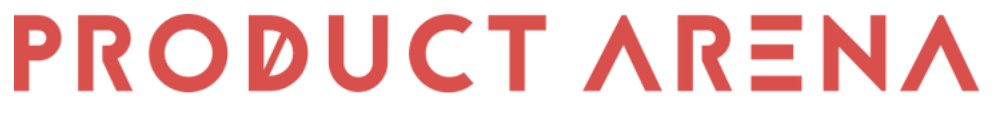
Obrigado
linkedin.com/in/luccmattos